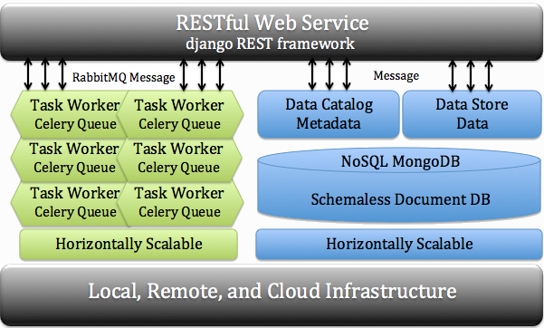

cyberCommons Framework!
The cyberCommons Framework is a loosely coupled service-orientated reference architecture for distributed computing workflows. The framework is composed of a series of Docker contained services combined by a Python RESTful API. These containers in the reference architecture use MongoDB, RabbitMQ, Django RESTful and Celery to build a loosely coupled and horizontally scalable software stack. This reference stack can be used to manage data, catalog metadata, and register computational worker nodes with defined tasks. Computations can scale across a series of worker nodes on bare-metal or virtualized environments. The framework provides a flexible, accessible interface for distributed processing and data management from multiple environments including command-line, programming languages, and web and mobile applications.
The cyberCommons Framework currently deployed across a wide variety of environments.
University of Colorado Libraries at the University of Colorado Boulder.
University of Oklahoma Libraries at the University of Oklahoma.
Northern Arizona University EcoPAD is an ecological platform for data assimilation and forecasting in ecology.